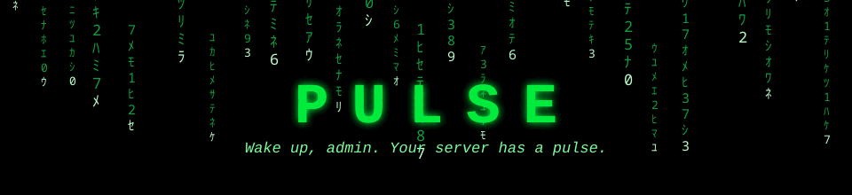

v0.1.0 VS 1.22.x SERVER SIDE OPEN SOURCE ZERO DEPENDENCIES
pulse_server_ticks_total 92183
pulse_server_tick_seconds_bucket{le="0.0334"} 91847
pulse_server_tick_busy_seconds 0.004
pulse_players_online 14
pulse_entities_by_code{code="chicken-rooster"} 213
pulse_server_suspend_seconds_total 8.42
pulse_engine_warnings_total{kind="overload"} 0
dotnet_gc_pause_time_total 41.2
$ ▊
■ Tick health. Rate, time as a histogram (p95 and p99 are yours), the budget to read saturation against, and the engine's own busy time: the /stats number, showing load climb long before TPS drops.
■ Players and world. Online count, ping, deaths; entities with a top-ten by type; chunks, worldgen queue, columns generated.
■ Network and pauses. TCP and UDP rates and totals; autosave suspends counted and timed, the freeze players actually feel.
■ Log health and runtime. Warning, error and fatal counters, four engine warnings worth alerting on, and the .NET runtime GC, heap, CPU and thread pool.
Point a Prometheus at it. The repo ships a provisioned Grafana dashboard (contrib/grafana, two docker commands) and ready-made alert rules (contrib/alerts).
Game panels skip Prometheus and read /metrics directly. The first panel integration was built that way in an afternoon, no help needed from the mod side.
The optional pulseotlp mod (GitHub releases) pushes everything over OTLP: otel-collector, Grafana Cloud, Datadog. Its dependencies ride in its own zip.